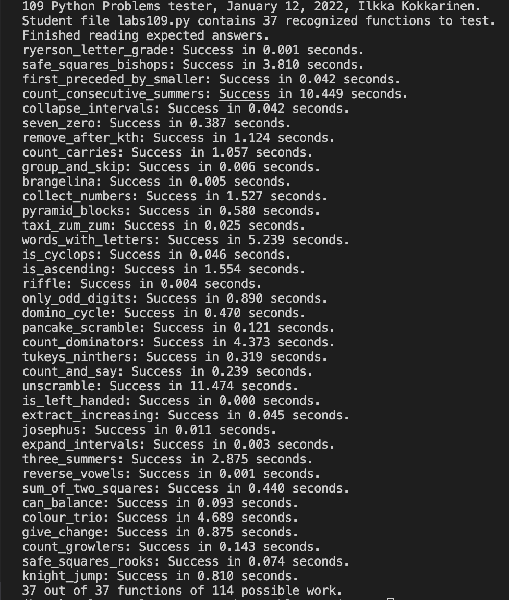

Objective:
My objective in completing the Python problem set comprising 37 questions was to showcase my proficiency and expertise in Python programming and problem-solving. By successfully solving these diverse challenges, I aimed to demonstrate my ability to tackle a wide range of programming tasks, validate my strong coding skills, and reinforce my comprehensive understanding of Python. This achievement reflects my commitment to continuous learning and the mastery of Python as a versatile tool for problem-solving and software development.
To take a look at the problem set and the answers please click here
Download Folder
Note: To run the tester download the folder and run "tester109.py", to view the code in your preferred IDE open "labs109.py" file.
Results
